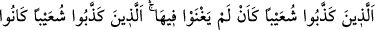
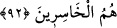

kaldılar.” yüzüstü ve dizlerinin üstüne ölü olarak düştüler. Bulundukları yere, artık
ayrılmayacak bir şekilde çakılıp kaldılar.
Rivayet edilir ki onlar bulutun altında tutuşup yanmış cesetler halinde yere yığıldılar.
Sanki bir kül yığını haline geldiler.
İbn Abbas (r. anhümâ) demiştir ki: Allah onlara, cehennemden bir kapı açıp oradan
üzerlerine şiddetli bir sıcaklık gönderdi. Sıcaklık, onların nefeslerini kesti. Kurtulmak
için evlerine girdiler. Fakat ne su, ne de gölge onlara fayda verdi. Sıcaklık onları
pişirdi. Bunun üzerine Allah Teâlâ, tatlı bir rüzgarla birlikte bir bulut gönderdi. Onlar
rüzgarın serinliğini ve hoşluğunu hissettiler. Bulut da onları gölgeledi. “Buraya gelin”
diye birbirlerini bulutun altına çağırdılar. Hepsi çıkıp buluta doğru yöneldiler. Erkek,
kadın, çoluk çocuk hepsi bulutun altında toplanınca Allah Teâlâ bulutu, alevlenmiş ateş
olarak onların üzerine indirdi. Yer de onları salladı. Ateşe atılıp kavrulan çekirgeler
gibi yanıp kül oldular. Gölge gününün azabı, işte budur.
et-Te’vîlâtü’n-Necmiyye’de denilmiştir ki: Onlar, inatlarından dolayı hakkı bâtıl,
bâtılı hak ve felahı hüsran, hüsranı da felah gördüler. “Derken o müthiş sarsıntı onları
yakalayıverdi.” Sûretleri de mânâlarına tâbî oldu. “Yurtlarında” cesetler diyarında
ruhları “diz üstü çöke kaldı.”
92. Şuayb’ı yalanlayanlar sanki yurtlarında hiç oturmamış gibiydiler. Asıl ziyana
uğrayanlar Şuayb’ı yalanlayanların kendileridir.
Daha önce onlar: “Ey Şuayb, ya mutlaka seni ve seninle beraber inananları
kentimizden çıkarırız” demişlerdi. Bu ayette ise söyledikleri o söz sebebiyle belaya
uğratılmalarının ve o söze karşılık cezalandırılmalarının beyanına başlanmaktadır:
“Şuayb’i yalanlayanlar, sanki yurtlarında hiç oturmamış gibi oldular.” Tamamen
kökleri kazındı, sanki hiç memleketlerinde ikamet etmemiş gibi oldular. Yani
söyledikleri o söz karşılığında cezalandırıldılar ve yurtlarından çıkarılan onlar oldu.
Hem de ebediyyen dönüşü olmayan bir çıkarılma.
Burada şu hususa işaret vardır: Yalanlayanlar ve büyüklenenler, bir müddet üstünlük
ve kuvvete sahip olsalar da günleri çabuk geçer, güçleri elden gider, adları ve sanları
unutulur ve izleri kaybolur. Hak ile beraber olan hak ehli ise her hususta galib olur.
Bâtıl, bütün vasıflarıyla yok olup gidicidir.
Mesnevî’de şöyle denilmiştir:
Münkirlerin övüldüğü bir minare nerde?
Bu âlemde doğruluklarına nişane olacak bu minare nerde?